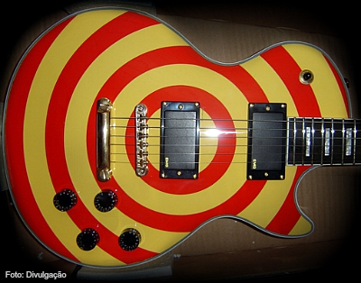
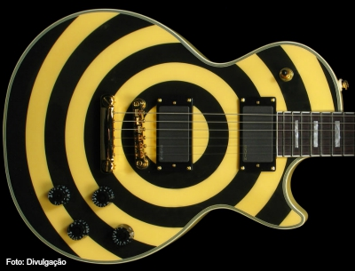

Zakk Wylde nasceu em 14 de janeiro de 1967, emBayonne, Nova Jersey. Enquanto ele era apenas uma criança, com apenas 8 anos, ele se interessou em tocar violão e começou a frequentar as aulas. Ele era uma criança prodígio com o instrumento de cordas e, quando ingressou no ensino médio, começou a levar a sério sua paixão. Tanto que ele podia tocar violão continuamente por 12 horas por dia, afetando-o na escola, no entanto, Zakk se formou na Jackson Memorial High School, Nova Jersey, em 1985
Quando ele tinha 14 anos, começou a trabalhar em SilvertonA música e sua carreira musical cresceram constantemente. Wylde começou tocando para bandas locais em Jersey. Sua primeira banda foi o Stone Henge e depois ele se mudou para outra banda, Zyris. Quando ele tinha 19 anos, sua grande chance veio quando conheceu o famoso Ozzy Osbourne. Wylde enviou uma fita demo para Ozzy e, ao final de uma única audição, Wylde foi contratado por Ozzy Osbourne. Ele foi o guitarrista principal e co-escritor da banda de Ozzy
Um ano depois, ele estreou no No Rest para oMalvado. Wylde e Ozzy Osbourne continuaram sua afiliação até Ozzmosis de 1995. Antes de 1995, Wylde havia formado uma banda, Pride & Glory, e eles lançaram um único álbum e depois se separaram. Quando ele se separou de Ozzy Osbourne, ele passou a formar sua própria banda, a Black Label Society. Ele lançou o agora clássico Book of Shadows em 1996. O Black Label Society foi uma ferramenta para ajudar a mostrar seu próprio talento artístico, o que é muito intransigente.
Em 1998, ele gravou Sonic Brew e o segundoálbum, Stronger Than Death, em 2000. Cinco anos depois, em 2001, Wylde se reunia com Ozzy Osbourne, mas ainda continuava trabalhando com a Black Label Society. No início e meados dos anos 2000, Zakk Wylde e a Black Label Society lançaram quatro álbuns - The Blessed Hellride, Mafia, Hangover Music vol. VI e Atirou no inferno. Mais trabalhos se seguiram ao longo dos anos, Caveira, Ordem do Preto em 2011, Catacumbas do Vaticano Negro em 2014, entre outros.
backtrack do solo "No More tears"
Aqui estão agora outros fatos sobre Zakk Wylde que você talvez não saiba:

Eu não sei se vocês também o consideram icônico, mas quem nunca viu uma guitarra original ou pintada com um desenho em formato de alvo? Acertou quem pensou no guitarrista Zakk Wylde da banda de Ozzy Osbourne que, sinceramente, não sei se a primeira imagem que lhe vem à cabeça é de um “guerreiro Viking” ou um motociclista devidamente caracterizado e montado em sua Harley Davidson. Pelo menos, muita “velocidade” para tocar guitarra ele tem, não é mesmo?
Importante ressaltar que tive a oportunidade de vê-lo duas vezes distribuindo autógrafos com sua enorme simpatia no estande da EMG Pickups (captadores) na NAMM 2013 e 2014 em Anaheim, na Califórnia/EUA. Para quem quiser saber mais sobre o que aconteceu na NAMM 2015 é só clicar aqui. Mas voltemos ao nosso Zakk.
Jeffrey Phillip Wiedlandt, ou Flip, como costumava ser chamado por seu pai, nasceu em 14 de janeiro de 1967 em Bayonne, no estado americano de New Jersey. É casado com uma antiga namorada, Barbaranne, que conheceu aos 16 anos e com quem tem três filhos: Hayley-Rae, 14 anos, Jesse John Michael, 13 anos, e Hendrix Halen Michael Rhoads, 4 anos (“homenagem” a Jimi Hendrix, Eddie Van Halen, Mike Piazza, e Randy Rhoads).
Zakk Wylde começou a tocar guitarra aos oito anos de idade, sem muito dedicação, mas intensificou os estudos a partir dos 14 anos. Estudou algumas aulas extras de violão clássico com o filho de seu professor de futebol americano. Montou sua primeira banda, “Stone Henge”, onde tocavam sucessos de Ozzy Osbourne, Rush, Black Sabbath e outras bandas do gênero Heavy Metal. Aos 18 anos, ele trabalhava em um supermercado quando entrou para uma banda chamada Zyris, substituindo um guitarrista. Nessa época adotou o nome Zakari Wyland, retirado do personagem Dr. Zakkary Smith, cientista aloprado do seriado de TV “Lost inSpace” (Perdidos no Espaço).
Em um show desta banda, Zakk foi observado por dois fotógrafos de rock da época, Mark Weiss e Dave Feld, que ficaram impressionados com a maneira com que ele tocava. Em conversa após o show, os fotógrafos convenceram-no a fazer um teste com Ozzy Osbourne, já que ele estava fazendo audições com músicos desconhecidos para substituir Jake E. Lee, que saiu da banda por estar descontente com a convivência na estrada com Ozzy, devido ao álcool e as drogas. Tarefa difícil achar algum substituto à altura para ocupar o lugar que já havia sido de Randy Rhoads.
Empolgado com o teste, Zakk solicitou ajuda de um amigo chamado Jim Matlosz para gravar uma demo com cinco faixas que foi enviada a Ozzy Osbourne. A fita continha uma “intro” já mostrando o estilo de som de Zakk, duas faixas de violão erudito, um arranjo de solos e licks no estilo da época e algumas músicas da carreira solo de Ozzy (na verdade só os solos de Randy Rhoads).
Mesmo empolgado em gravar a demo, particularmente ele não acreditava que conseguiria a vaga na banda de Ozzy. No dia seguinte da entrega do material, recebeu um telefonema de Sharon Osbourne, esposa de Ozzy, perguntando se ele queria entrar na banda. Porém, Zakk ainda tinha um contrato com a banda Zyris e o agente da banda, Peter J., queria “vender” Zakk por 60 mil dólares. O agente decidiu entrar na justiça, o que quase fez com que Zakk não conseguisse o emprego com Ozzy. No final, felizmente, acabou sendo “negociado” por cinco mil dólares.
Em maio de 1987, aos 20 anos de idade, Zakk entrara para a banda de Ozzy Osbourne e mudara oficialmente seu nome para Zachary Phillip Wylde. Ozzy apresentou o novo guitarrista em 15 de dezembro de 1987 no Hard Rock Café, em Nova Iorque. Em 1988, Zakk fez sua estreia em estúdio com o álbum “No Rest For The Wicked” e gravou seu primeiro show com Ozzy em uma prisão. Zakk se revelou como um dos mais notáveis jovens guitarristas do Metal. Seu estilo agressivo e sua “pegada” o tornaram facilmente reconhecível.
Após cerca de 20 anos ao lado de Ozzy, ajudando na composição e na gravação de alguns de seus clássicos, Zakk resolveu deixar a banda, e em 1998, criou a “Black Label Society”, com muitos shows e turnês mundiais, inclusive shows pelo Brasil. Desde então, Zakk Wylde se dedica a manter o padrão de faixas pesadas e bem trabalhadas da sua nova banda, que já possui mais de 10 discos lançados.
História bacana, não é mesmo? Mas voltando ao nosso tema de guitarras icônicas, a pintura “Bulls-eye” (“alvo” em inglês), na verdade, Zakk originalmente pediu o grafismo como a espiral do filme “Vertigo”, de Alfred Hitchcock, de 1958, para personalizar sua guitarra, mas apesar do luthier ter errado no serviço (ops, isso quase não acontece por aqui, não é mesmo?), Zakk gostou do resultado e resolveu ficar com a guitarra assim mesmo. Ele teve essa ideia depois de ver o filme, como relata nesta entrevista ao site Musicradar.
O guitarrista ainda usou várias outras guitarras, até ser endorsado e conhecido principalmente por sua preferência pelas guitarras “Gibson Les Paul Custom” com esta pintura exclusiva, que ele deliberadamente a adotou para que pudesse se diferenciar visualmente de seu ídolo Randy Rhoads, que tocava anteriormente com Ozzy.
Mais tarde, em reconhecimento ao seu sucesso no meio musical, a Gibson Guitars lançou uma linha inteira de guitarras personalizadas de Zakk Wylde, inclusive a “Vertigo” que fora seu projeto inicial.
Foi um verdadeiro “certificado” do seu enorme sucesso comercial. Os modelos personalizados Gibson Les Paul Custom “Signature” de Zakk incluem uma guitarra com o design “Bullseye” vermelho e flame-maple, um modelo na cor branco envelhecido com o “Bullseye” em preto, um modelo “Buzzsaw” alaranjado, e um modelo “Camo” “Bullseye”, com a pintura de camuflagem esverdeada. Os “Inlays” dos braços são feitos em madrepérola.
 Mas Zakk comprou e usou vários modelos de guitarras, como você pode ler na entrevista à revista Vintage Guitar neste link. Uma delas ficou desaparecida por algum tempo porque foi roubada de Zakk em uma turnê no Texas/ EUA ( veja aqui a matéria completa). Foi oferecida até uma recompensa para quem tivesse alguma informação que pudesse levar Zakk a recuperar sua guitarra, já que tinha um valor sentimental enorme por se tratar de um presente de graduação recebido de seus pais. E se você acompanha nosso blog de perto, já sabe que esse tipo de roubo também acontece no Brasil como relatado neste post.
Zakk só recuperou essa guitarra anos mais tarde, depois que um fã a adquiriu numa casa de penhores e percebeu tratar-se da guitarra roubada do guitarrista através do número de série presente no “headstock”. Além disso, havia as iniciais “Z.W.” gravadas nas costas da guitarra. Em seguida, contatou a assessoria de imprensa de Zakk para devolvê-la.
As guitarras de Zakk produzidas pela Gibson não apresentavam nenhuma característica muito especial e exclusiva, exceto a captação que não é muito comum nas Gibsons. A empresa de captadores EMG equipou as guitarras de Zakk com captadores de uma série “signature” do astro. Os mais conhecidos são os modelos ativos ZW 81 e 85.
Vale a pena lembrar que a Epiphone, outra empresa da Gibson Brands, também lançou os modelos das guitarras de Zakk. Aliás, foram apenas estas que consegui encontrar nas lojas no Brasil, evidentemente pelos custos serem menores em relação às Gibsons.
Assim como outros guitarristas icônicos que já citei no blog, Zakk também não foi diferente com relação aos demais fabricantes de acessórios, suas preferências pessoais de equipamentos foram incorporadas por outras marcas além da Gibson, como na figura abaixo:
Como curiosidade, Zakk, este ano em parceria com uma empresa de instrumentos musicais, lançou a empresa WYLDE AUDIO Guitars and Amps na NAMM Winter 2015, que ainda não foi muito divulgada, pois ainda se trata de protótipos. Para saber mais, é só clicar aqui. Bem pessoal, essa é a minha opinião sobre mais um guitarrista virtuoso e sua guitarra tornada icônica pela história acrescentada. Note que você pode sempre discordar, escrevendo por que aqui nos comentários ou deixando sua opinião nas redes sociais da SANTO ANGELO.
Nome completo Jeffrey Phillip Wiedlandt Nascimento 14 de janeiro de 1965 (56 anos) Origem Bayonne, Nova Jérsei País Estados Unidos Gênero(s) Heavy metal, hard rock, southern rock, Groove Metal Instrumento(s) Guitarra, violão, vocal, piano, baixo, harmônica, bandolim, banjo, mellotron Modelos de instrumentos Zakk Wylde Signature Les Paul, Zakk Wylde Signature Gibson Flying V Período em atividade 1986 - presente
Gravadora(s) Geffen, Spitfire, InsideOut Music, Artemis, Roadrunner, Epic, Sony Afiliação(ões) Zyris, Ozzy Osbourne, Black Label Society, Pride & Glory, Derek Sherinian, Steel Dragon Página oficial ZakkWylde.com